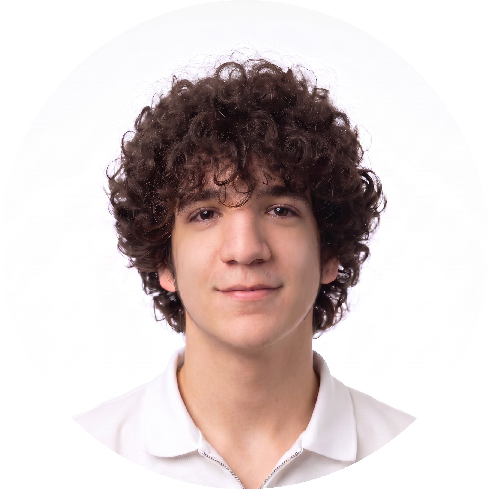

Портфолио разработчика
Тарон Авагян
Junior Web Developer / Intern
Я начинающий веб-разработчик из Еревана. Учусь на первом курсе направления «Прикладная математика и информатика» в РАУ и изучаю C у преподавателя Вадима Абрамяна. Окончил обучение по программированию и веб-разработке в Компьютерной Академии TOP, где изучал Python, HTML, CSS и JavaScript. Продолжаю изучать C, C++ и Python с помощью ChatGPT и умею пользоваться ИИ-агентами. Быстро осваиваю новые темы, работаю с документацией и хочу развиваться через практику и проекты.
Образование
Учёба и курсы
Российско-Армянский университет (РАУ)
Первый курс, прикладная математика и информатика. Изучаю язык C; преподаватель — Вадим Абрамян.
Компьютерная Академия TOP
Окончил обучение по программированию и веб-разработке: Python, HTML/CSS и JavaScript.
Языки
Владею тремя языками
- Русский — родной
- Армянский — родной
- Английский — B1: чтение технической документации и базовое общение
Технологии и инструменты
С чем работаю
- Языки и веб: C, C++, Python, HTML5, CSS3, JavaScript
- Инструменты: Git, GitHub, Visual Studio Code
- ИИ-инструменты: ChatGPT, Gemini, Claude, Codex и другие ИИ-агенты
Сильные стороны
Как я учусь и работаю
- Быстро осваиваю новые технологии
- Трудолюбив и готов погружаться в сложные задачи
- Развиваю аналитическое мышление и математическую базу
Контакты